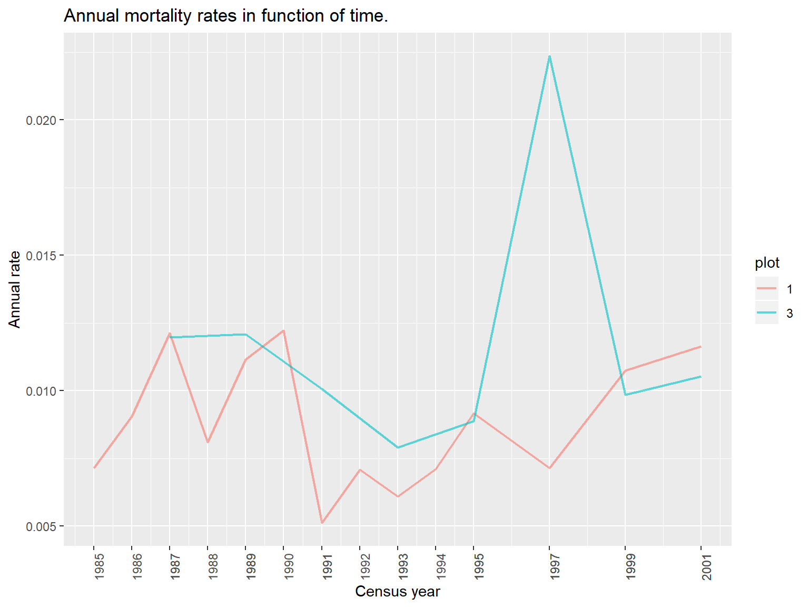
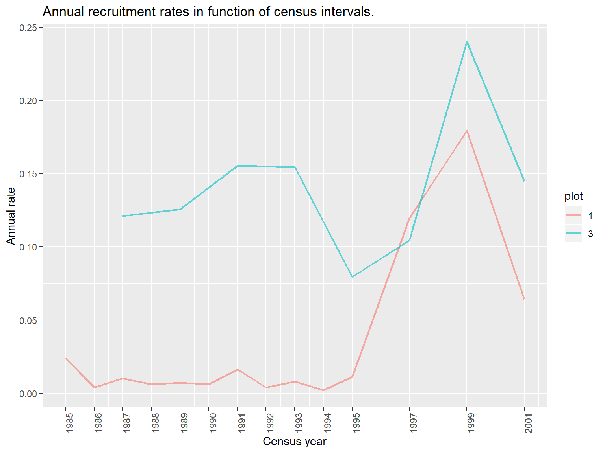
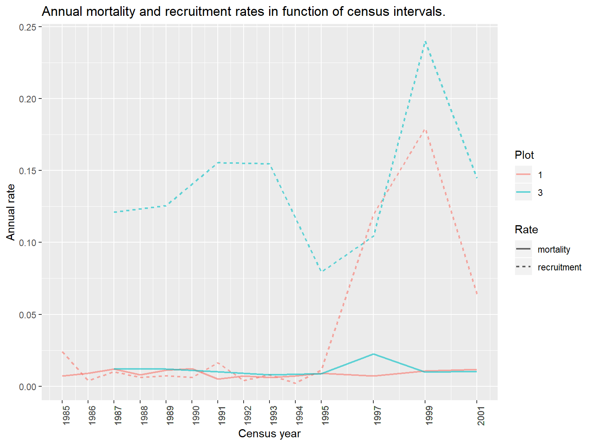
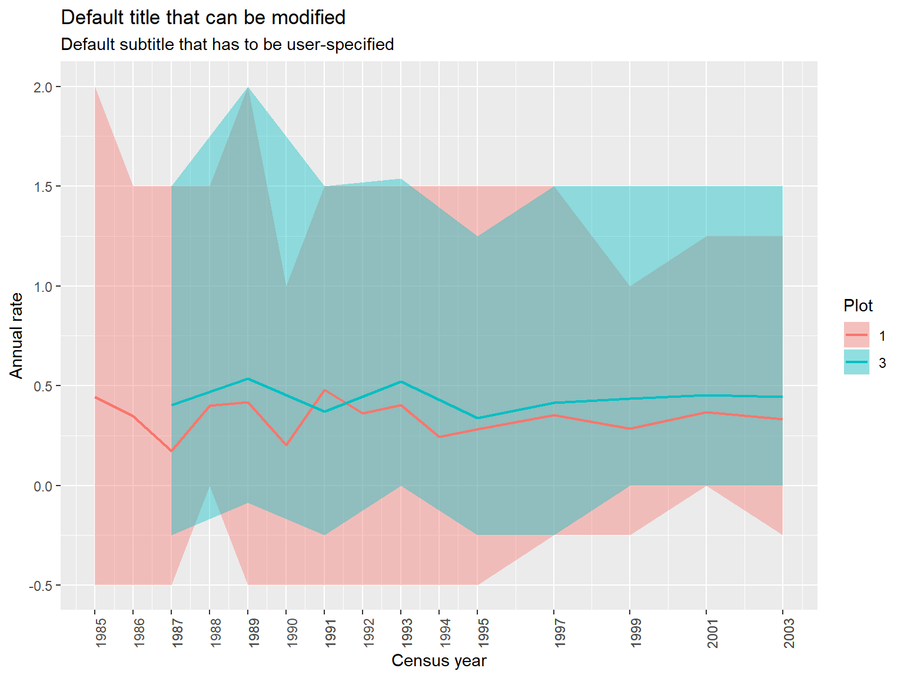

forestdata-vignette.RmdForestData is a package that gathers methods to works with dendrometric censuses datasets.
In particular, ForestData has been designed especially to implement and make available Camille Piponiot’s corrections algorithms, but it also includes other functions to compute classical rates or metrics (basal area, stem growth, mortality and recruitment) and display them efficiently.
This vignette details how to use these functions, step by step and using the built-in example dataset. ForestData has three main “families” of functions depending on what is intended to do: correct_,compute_ and display_. Each “family” will be detailed, so if you only are interested by one of these items, you can jump directly to the corresponding section.
ForestData is not yet published on the CRAN. It can easily be downloaded from EcoFoG’s github repository (on this page) and compiled locally, and even more easily be installed directly into R with devtools’ install_github function. You can use the following code to install ForestData.
if(!"ForestData" %in% installed.packages()){
if(!"devtools" %in% installed.packages()){
install.packages("devtools")
}
devtools::install_github("EcoFoG/ForestData")
}
library(ForestData)The main goal of ForestData is to provide generic and simple corrections adapted for forest censuse.Three functions are implemented in order to correct different error sources in such datasets:
After presenting the format and contents of the dataset and a preparation function that simplifies the correction functions calls, we’ll go through the presentation of each function in the recommended order (correct_alive, correct_size, correct_recruits). The details of the corrections are found after the examples to simplify the introduction to the package.
The type of dataset that Forestdata’s function are designed to treat is a long-format time series: each line corresponds to a single tree measurements at one census time. Furthermore, the dataset must respect those conditions:
To illustrate the following explanations, a built-in example dataset will be used. It corresponds to the squares 1 and 3 of the 6th Plot of the Paracou Experiment database (more information here)
The dataset can be loaded using the function utils::data.
Let’s take a look to its structure:
data(example_census)
str(example_census)
#> 'data.frame': 25533 obs. of 12 variables:
#> $ Forest : chr "Paracou:P6" "Paracou:P6" "Paracou:P6" "Paracou:P6" ...
#> $ Plot : int 1 1 1 1 1 1 1 1 1 1 ...
#> $ idTree : int 100621 100621 100621 100621 100621 100621 100621 100621 100621 100621 ...
#> $ Family : chr "Euphorbiaceae" "Euphorbiaceae" "Euphorbiaceae" "Euphorbiaceae" ...
#> $ Genus : chr "Sandwithia" "Sandwithia" "Sandwithia" "Sandwithia" ...
#> $ Species : chr "guyanensis" "guyanensis" "guyanensis" "guyanensis" ...
#> $ CensusYear : int 1984 1985 1986 1987 1988 1989 1990 1991 1992 1993 ...
#> $ CodeAlive : logi TRUE TRUE TRUE TRUE TRUE TRUE ...
#> $ CodeMeas : int 0 0 0 0 0 0 0 0 0 0 ...
#> $ Circ : num 40 40 40 40.5 40.5 41.5 40.5 40.5 40.5 41 ...
#> $ binomial_name: chr "Sandwithia_guyanensis" "Sandwithia_guyanensis" "Sandwithia_guyanensis" "Sandwithia_guyanensis" ...
#> $ POM : num 1.3 1.3 1.3 1.3 1.3 1.3 1.3 1.3 1.3 1.3 ...The information used by ForestData’s functions is contained in the following columns of this dataset:
idTree contains unique tree IDs.CensusYear contains census year corresponding to each tree measurement. The census resolution is originally yearly from 1984 to 1995 included, then biannual from 1995 to 2003 includedCirc contains the stem size measured as circumference. In most cases, circumference is measured at breast height (default POM: 130 cm).binomial_name contains the full species name of the measured trees. This information is used in correct_size to discriminate pioneer species from other species, because their growth rates are drastically different.Plot contains plot indices. This is important for the functions correct_alive and correct_recruits, since the plots have different temporal resolution in this example.POM contains the Point of Measurement (POM) values, that is, the height at which tree size (circumference of diameter) is measured.All the other columns are only additional information: Family, Genus and Species are taxonomical information and Forest is a geographical indication (where is located the plot to which the tree belongs). This information is invariant for a given tree among its different measurements.
prepare_forestdata to simplify your workflowForestData’s functions have a lot of arguments, including because there is no constraints on the user side for the dataset’s column names, and to allow the user setting the functions entirely to adapt it to every specific dataset…
However, most of these arguments are redundant and it can be exhausting to write long calls, only to specify column names for every step.
Fortunately, there is a function that does the job for you: prepare_forestdata. If you specify everything only once using this function, your argument settings will be kept in memory and called automatically by the functions.
For example, let’s specify the column names that ForestData needs to correct our dataset:
# specify the example dataset's column names
prepare_forestdata(example_census,
plot_col="Plot",
id_col="idTree",
time_col="CensusYear",
status_col = "CodeAlive",
size_col="Circ",
measure_type = "C",
POM_col = "POM")As you can see, the arguments of prepare_forestdata are the dataset you are going to run corrections on, the “type of measurement” (either “C” for circumference or “D” for diameter), and the names of the columns containing the informations needed for corrections to run, i.e.:
The column names are simply called with getOption in the next functions. Let’s check that these values have been correctly set:
# checking that the options have been set
getOption("plot_col"); getOption("time_col")
#> [1] "Plot"
#> [1] "CensusYear"Note that if the function is run twice with similar specifications for one or several names, a message indicates that those ones kept unchanged
#
prepare_forestdata(example_census,plot_col="Plot",id_col="idTree",time_col="CensusYear", status_col = "CodeAlive",size_col="Circ",measure_type = "C",POM_col = "POM")
#> [1] "plot_col let to its default or previous value"
#> [1] "id_col let to its default or previous value"
#> [1] "time_col let to its default or previous value"
#> [1] "status_col let to its default or previous value"
#> [1] "size_col let to its default or previous value"
#> [1] "measure_type let to its default or previous value"
#> [1] "POM_col let to its default or previous value"Moreover, prepare_forestdata assures that your specifications are coherent: if one column name is erroneous, the function stops with an explicit error message.
correct_alive to correct tree life status errors in your datasetForest censuses are all about tree life statuses: mortality and recruitment depend directly on these variables, and other metrics such as basal area of growth rates should be only computed for live trees. Thus, avoiding errors in tree life statuses is the prime step to ensure that these metrics can be correctly calculated for your forest plots.
correct_alive takes your data with uncorrected tree life status as an input, and detects unseen trees (with no corresponding line or with NA status for a given census year). The function does it by plot if there are several plots with different censusing resolutions. It also spots “reviving” events (when a tree is declared dead but seen alive later on). The function returns the original dataset with additional lines created for unseen trees (in those cases, the trees are set with NA uncorrectedstatus, circumference, and POM), and a new field named “status_corr”.
Here is the full call for correct_alive, with our example dataset:
#Correct it (full call)
example_status_corr <- correct_alive(example_census,
id_col = "idTree",
time_col = "CensusYear",
status_col = "CodeAlive",
plot_col = "Plot",
byplot = TRUE,
dead_confirmation_censuses = 2,
use_size = FALSE,
invariant_columns = c("Genus",
"Species",
"Family",
"Forest",
"binomial_name"))
#>
|
| | 0%
|
|================================ | 50%
#> Warning in .correct_alive_tree(data_plot[which(data_plot$id == i), ],
#> censuses, : tree 178729 has only been recorded dead. It might be that it
#> has been recruited and died on the same between-censuses interval. Please
#> verify it
#>
|
|=================================================================| 100%
#> Warning in .correct_alive_tree(data_plot[which(data_plot$id == i), ],
#> censuses, : tree 103043 has only been recorded dead. It might be that it
#> has been recruited and died on the same between-censuses interval. Please
#> verify it
#> Warning in .correct_alive_tree(data_plot[which(data_plot$id == i), ],
#> censuses, : tree 103044 has only been recorded dead. It might be that it
#> has been recruited and died on the same between-censuses interval. Please
#> verify it
#> Warning in .correct_alive_tree(data_plot[which(data_plot$id == i), ],
#> censuses, : tree 103046 has only been recorded dead. It might be that it
#> has been recruited and died on the same between-censuses interval. Please
#> verify it
#> Warning in .correct_alive_tree(data_plot[which(data_plot$id == i), ],
#> censuses, : tree 103177 has only been recorded dead. It might be that it
#> has been recruited and died on the same between-censuses interval. Please
#> verify it
#> Warning in .correct_alive_tree(data_plot[which(data_plot$id == i), ],
#> censuses, : tree 103178 has only been recorded dead. It might be that it
#> has been recruited and died on the same between-censuses interval. Please
#> verify it
#> Warning in .correct_alive_tree(data_plot[which(data_plot$id == i), ],
#> censuses, : tree 103191 has only been recorded dead. It might be that it
#> has been recruited and died on the same between-censuses interval. Please
#> verify it
#> Warning in .correct_alive_tree(data_plot[which(data_plot$id == i), ],
#> censuses, : tree 103193 has only been recorded dead. It might be that it
#> has been recruited and died on the same between-censuses interval. Please
#> verify it
#> Warning in .correct_alive_tree(data_plot[which(data_plot$id == i), ],
#> censuses, : tree 103343 has only been recorded dead. It might be that it
#> has been recruited and died on the same between-censuses interval. Please
#> verify it
#> Warning in .correct_alive_tree(data_plot[which(data_plot$id == i), ],
#> censuses, : tree 103379 has only been recorded dead. It might be that it
#> has been recruited and died on the same between-censuses interval. Please
#> verify it
#> Warning in .correct_alive_tree(data_plot[which(data_plot$id == i), ],
#> censuses, : tree 103567 has only been recorded dead. It might be that it
#> has been recruited and died on the same between-censuses interval. Please
#> verify it
#> Warning in .correct_alive_tree(data_plot[which(data_plot$id == i), ],
#> censuses, : tree 103618 has only been recorded dead. It might be that it
#> has been recruited and died on the same between-censuses interval. Please
#> verify itAs you can see, warning messages are sent every time a tree has only one or several records with dead status. This is generally due to the succession of growth over minimum censusing size and death, between two consecutive census. Still, confirming it manually is always useful to ensure that there is no other anomaly.
The function takes 9 arguments as an input:
byplot, TRUE or FALSE, indicates whether the correction should be done by plot or not. If not, no need to set plot_col.dead_confirmation_censuses is a threshold. It corresponds to the number of unsighting censuses, after which an unseen tree can be considered dead. In Paracou, we consider that a tree that hasn’t been seen during two consecutive censuses is likely to be dead… except if it is seen alive again, later on.invariant_columns contains the names of the columns that do not vary with time for a given tree (in our example dataset, taxonomic information and Forest). If new lines corresponding to unseen trees are added, this variables will be set to their unique value, and the other variables will be let to NA.use_size is an optional argument that should be deprecated. It allows to create a tree life status from tree size measurement if this field doesn’t exist in your dataset. It means that for any non-NA size measurement, the corresponding tree will be considered alive…This function, as well as the other correction functions, include a progress bar to give you a raw estimate of computation advancement in case you deal with particularly big datasets.
If you used prepare_forestdata to preset some of the arguments, the call can be written more shortly:
#Correct it (short version with column names set with prepare_forestdata)
example_status_corr <- correct_alive(example_census,
invariant_columns = c("Genus",
"Species",
"Family",
"Forest",
"binomial_name"))
#>
|
| | 0%
|
|================================ | 50%
|
|=================================================================| 100%Let’s now take a look to the corrected dataset’s structure:
nrow(example_census) #25533
#> [1] 25533
str(example_status_corr)
#> 'data.frame': 25634 obs. of 13 variables:
#> $ Forest : chr "Paracou:P6" "Paracou:P6" "Paracou:P6" "Paracou:P6" ...
#> $ Plot : int 1 1 1 1 1 1 1 1 1 1 ...
#> $ idTree : int 100621 100621 100621 100621 100621 100621 100621 100621 100621 100621 ...
#> $ Family : chr "Euphorbiaceae" "Euphorbiaceae" "Euphorbiaceae" "Euphorbiaceae" ...
#> $ Genus : chr "Sandwithia" "Sandwithia" "Sandwithia" "Sandwithia" ...
#> $ Species : chr "guyanensis" "guyanensis" "guyanensis" "guyanensis" ...
#> $ CensusYear : int 1984 1985 1986 1987 1988 1989 1990 1991 1992 1993 ...
#> $ CodeAlive : logi TRUE TRUE TRUE TRUE TRUE TRUE ...
#> $ CodeMeas : int 0 0 0 0 0 0 0 0 0 0 ...
#> $ Circ : num 40 40 40 40.5 40.5 41.5 40.5 40.5 40.5 41 ...
#> $ binomial_name: chr "Sandwithia_guyanensis" "Sandwithia_guyanensis" "Sandwithia_guyanensis" "Sandwithia_guyanensis" ...
#> $ POM : num 1.3 1.3 1.3 1.3 1.3 1.3 1.3 1.3 1.3 1.3 ...
#> $ status_corr : num 1 1 1 1 1 1 1 1 1 1 ...The function added 101 lines corresponding to unseen trees. In this example dataset, it corresponds to only 0.4% of the data, thanks to the field verification efforts of the Paracou team. This proportion might be higher, especially for uneasily accesible plots, and life status errors can cause a severe prejudice to mortality rates computation.
correct_size to correct tree size measurementsNote: Tree height correction is over the scope of this package. In this vignette “tree size” thus refers to either diameter or circumference.
Here is the full call for correct_size. Here, we apply this correction to the dataset already corrected for life status. We recommend to follow this order.
example_size_corr <- correct_size(example_status_corr, #full
size_col = "Circ",
time_col = "CensusYear",
status_col = "status_corr", # Because we corrected life statuses beforehand
species_col = "binomial_name",
id_col = "idTree",
POM_col = "POM",
measure_type = "C",
positive_growth_threshold = 5,
negative_growth_threshold = -2,
default_POM = 1.3,
pioneers = c("Cecropia", "Pourouma"), #Works with species or genera
pioneers_treshold = 7.5,
ignore_POM = FALSE)Warnings are displayed for trees having only one (or no) non-NA size measurement.
The function has 14 arguments:
id_col (tree IDs), size_col (tree sizes : circumference or diameter), time_col (census year), status_col (life status) and plot_col (plot, if relevant)measure_type (“C” or “D”) indicates whether measured are circumferences or diameters.byplot, TRUE or FALSE, indicates whether the correction should be done by plot or not. If not, no need to set plot_col.positive_growth_threshold and negative_growth_threshold correspond to positive (annual) and negative (absolute) tolerated growth rates, and constitute the interval out of which growth values are considered abnormal. These values are given in cm(diameter)/year and cm(diameter), respectively.POM_col is the name of the column containing Point Of Measurement values. These are capital to complement the thresholds and detect POM shifts and the resulting size decreases, even when these are not violating the thresholds. ignore_POM(TRUE/FALSE) indicates whether POM-based corrections must be ignored or not, since many dataset do not include this information. We recommend to use this option only when there is no other alternative. Corrections are thus less precise than if POMs are available.default_POM is the POM at which trees are supposed to be measured (defaults to 1.3). Specifying int allows e.g. for trees always measured with a higher POM, to be informed that the measured sizes have no DBH equivalent.pioneers and pioneers_threshold are respectively the name list of pioneer species/genera that require applying a different upper limit for growth rate, since they grow faster than others. Species are discriminated with their names, which are in the column specified with species_col.If one used prepare_forestdata and corrected for life status beforehand, one has to specify the column containig species names, the positive, negative and pioneers’ thresholds, and the name of the fast growing taxa (genera/species) if not letting it to default
# Specifying different thresholds
example_size_corr <- correct_size(example_status_corr,
species_col = "binomial_name",
positive_growth_threshold = 4, #in cm(diameter)/year
negative_growth_threshold = -1.5, #in cm(diameter), absolute
pioneers = c("Albizia"),
pioneers_treshold = 7)#in cm(diameter)/year
# Letting all to default with out example dataset
example_size_corr <- correct_size(example_status_corr, species_col="binomial_name")correct_recruits to spot and correct overgrown recruitscorrect_recruits spots overgrown recruits according to the specified minimum diameter limit, and a tolerated growth threshold. It adds lines to the dataset corresponding to overgrown recruits’ hypothetical sizes before first record. These lines are tagged with the column “corrected_recruits” (FALSE for regular data, TRUE for lines generated with this function). For those, only the corrected size (size_corr) is specified along with tree ID and invariant columns. The columns originally containing size, POM and life status (raw and corrected) are let to NA.
Corrected size values for overgrown recruits should not be used to compute growth rates, and more generally, we advise to use this correction only for the specific cases that absolutely require it. Before correcting for overgrown recruits, we advise to correct life statuses and sizes beforehand.
Here is the full call of the function:
example_recruits <- correct_recruits(example_size_corr,
dbh_min = 10,
positive_growth_threshold = 5,
time_col = "CensusYear",
id_col = "idTree",
plot_col = "Plot",
size_corr_col = "size_corr", #because we already corrected
status_corr_col = "status_corr", # both size and status
measure_type = "C",
invariant_columns = c("Forest", "Family", "Genus", "Species", "binomial_name"),
byplot = TRUE,
correct_status = FALSE
)
#>
|
| | 0%
|
|================================ | 50%
|
|=================================================================| 100%The function has 12 arguments:
id_col (tree IDs), size_col (tree sizes : circumference or diameter), time_col (census year), status_col (life status) and plot_col (plot, if relevant)measure_type (“C” or “D”) indicates whether measured are circumferences or diameters.byplot, TRUE or FALSE, indicates whether the correction should be done by plot or not. If not, no need to set plot_col.positive_growth_threshold is apositive (annual) tolerated growth rates, over which growth values are considered abnormal. These values are given in cm(diameter)/year.invariant_columns contains the names of the columns that do not vary with time for a given tree (in our example dataset, taxonomic information and Forest). If new lines corresponding to unseen trees are added, this variables will be set to their unique value, and the other variables will be let to NA.Short version with prepare_forestdata:
example_recruits <- correct_recruits(example_size_corr,
dbh_min = 10,
positive_growth_threshold = 5,
invariant_columns = c("Forest", "Family", "Genus", "Species", "binomial_name")
)
#>
|
| | 0%
|
|================================ | 50%
|
|=================================================================| 100%Tree sizes measurements are essential information to study the dynamics of a forest plot over time, through tree stem growth rates. This implies a need to ensure that size measurements are correct. There is a consensus regarding the need to standardize these metrics using the same Point of Measurement (POM) for each tree whenever possible (breast height, 1.30m). However, some trees develop buttresses or defaults that prevent measuring stem size accurately at breast height, and imply to uprise the POM. Most of the error regarding tree size comes from either uncorrect to no report of POM shifts, or imprecisions using a measuring tape. We categorize size measurement errors according to the direction (negative, positive) and temporality (transient, permanent) of the anomalies.
Except for explicit POM changes, anomalies are detected by correct_size using thresholds defining abnormal increase/decrease in tree size. These thresholds depend on the protocol applied for a given census (e.g., basal measurement error rate and field verification protocols, if any) as well as empirical considerations regarding tree growth.
For the Paracou Disturbance Experiment, an abnormal decrease is considered to be under -2cm (absolute, between-census diameter growth) and an abnormal increase is over 5cm/year (annual diameter growth). These apparently permissive thresholds are due to the 35 years of experience gained from the begining of the experiment, as well as intensive and strict field verifications (apurement protocol by A. Dourdain) carried out in parallel of the censusing campaigns, allowing to verificate directly most of the doubtful measurements.
In reality, some heliophilous species car grow far more rapidly than others, and can cause “false positive” anomaly detections. To avoid uprising the growth threshold and the chance of non-detection for real anomalies, it seems better to discriminate, at least grossly, this group of species: In correct_size, we added two arguments to specify a list of generally fast growing (pioneer) species or genera, and a greater positive growth threshold to apply to those species.
For Paracou, practical experience suggests that 7.5cm/year is a reasonable threshold for these species.
The choice of these thresholds is let to the user (although they default to values used for the Paracou database), and these must be set according to the dataset one wants to correct.
Punctual errors are transient, abnormal increases or decreases in tree size measurement, that eventually returns to “normal” values. This implies to define a threshold to discriminate “abnormal” increases and decreases, as well as the concept of “return-to-normal”.
In ForestData’s correct_size function, we considered that an error is punctual if one of the two next census’ values present a similar change in size, with opposite direction, that counterbalances the anomaly. These can be caused by an erroneous measurement or estimation of tree size at a given census, more rarely for two consecutive censuses.
Punctual errors are corrected by replacing the abnormal values with more reasonable estimates. That is simply done by linearily interpolating these value between the no-NA measurements surrounding the anomaly: right before the increa/decrease, and at the “return-to-normal” point.
Permanent errors or shifts are definitive uprises or downrises of size measurement values, with no detectable “return-to-normal” point.
In most of the case, these are permanent decreases due to POM change: when POM is uprisen, due to the semi-conic shape of the trunk, the measured size is inferior than if it was measured accurately at breast height. Shifts can also (more rarely) be caused by size estimation rather than measurement (or even to the transition from estimation to actual measurement), for stems showing a highly non-cylindric conformation, and may be positive or negative in such cases.
In correct_size, shifts are corrected using two methods: * Explicitely, for reported POM shifts, i.e. the sum of the difference in sizes before and after POM change and the expected growth value (linear interpolation) is added to the following size measurements, graphically resulting in a translation of the size trajectory after the POM uprise. * Upon detection, for anomalies without detected “return-to-normal”, by re-aligning on the longest series of measurement (or the most recent, if both have the same number of points)
Most forest inventories focus on trees with DBH over 10cm, or sometimes 1cm. Every tree (or stem) is, supposedly, tagged with a label at the first inventory and followed accross censuses. Recruited trees are newcomers that pass the minimum censusing diameter limit between two campaigns. Ideally, one expects these tree to measure just a few more than this limit, especially if the temporal resolution of the inventory is low - trees generally grow slowly. Having defined a growth threshold T (in cm/year) and with I, the interval between two census (in years), the size of a tree at recruitment time should not exceed 10+T*I.
Overgrown recruits are trees that violate this assumption, generally because those weren’t noticed before, for some reason. These individuals can be problematic when it comes to estimate basal area or biomass, especially if they are adult trees. correct_recruits re-creates the previous growth trajectory of those trees using linear extrapolation.
Being highly hypothetical, corrected size values for overgrown recruits should not be used to compute growth rates, and more generally, we advise to use this correction only for the specific cases that absolutely require it.
In addition to the corrections the package provides functions to compute and display the classical metrics used in Forest Science: annual or absolute growth rates, annual recruitment and mortality rates, and basal area. In this section, we will go through examples of these features to show the possibilities of these tools.
The functions compute_mortality and compute_recruitment compute annual mortality or recruitment rates by plot or globally.
Let’s see an example with our built-in dataset:
data(example_status_corr)
## Full calls for the corrected dataset
mortality <- compute_mortality(example_status_corr,
status_col="status_corr", #When corrected is set to FALSE, correct_alive is triggered, thus remember to specify the column containing uncorrected tree statuses.
time_col="CensusYear",
id_col="idTree",
dead_confirmation_censuses=2,
byplot = TRUE,
plot_col = "Plot",
corrected = TRUE)
recruitment <- compute_recruitment(example_status_corr,
status_col="status_corr", #When corrected is set to FALSE, correct_alive is triggered, thus remember to specify the column containing uncorrected tree statuses.
time_col="CensusYear",
id_col="idTree",
dead_confirmation_censuses=2,
byplot = TRUE,
plot_col = "Plot",
corrected = TRUE)
summary(mortality); summary(recruitment)
#> interval time annual_deathrate plot
#> 1995_1997: 2 Min. :1985 Min. :0.005123 Min. :1.000
#> 1997_1999: 2 1st Qu.:1989 1st Qu.:0.007343 1st Qu.:1.000
#> 1999_2001: 2 Median :1992 Median :0.009513 Median :1.000
#> 1984_1985: 1 Mean :1993 Mean :0.009889 Mean :1.727
#> 1985_1986: 1 3rd Qu.:1996 3rd Qu.:0.011517 3rd Qu.:3.000
#> 1986_1987: 1 Max. :2001 Max. :0.022355 Max. :3.000
#> (Other) :13
#> interval time annual_recruitment_rate plot
#> 1995_1997: 2 Min. :1985 Min. :0.002039 1:14
#> 1997_1999: 2 1st Qu.:1989 1st Qu.:0.007375 3: 8
#> 1999_2001: 2 Median :1992 Median :0.044086
#> 1984_1985: 1 Mean :1993 Mean :0.072152
#> 1985_1986: 1 3rd Qu.:1996 3rd Qu.:0.124529
#> 1986_1987: 1 Max. :2001 Max. :0.239983
#> (Other) :13Both functions return comparable outputs and have the same arguments:
data, the dataset (hopefully corrected with correct_alive() beforehand)status_col, which defaults to “status_corr” and should stay unchangedtime_col, the name of the column containig census yearid_col, the name of the column containig unique tree idsdead_confirmation_censuses, an argument related to correct_alive(): the number of consecutive census after which unseen trees are considered dead. The choice of this value for corrections imply that mortality rates cannot be computed for the last (dead_confirmation_censuses - 1) censuses. Although it does not impact recruitment rate computation, this constraint has been included in both functions because both metrics are often jointly examined.byplot (TRUE of FALSE) that indicates if rates must be computed separately for each plot, or globallyplot_col, the name of the column indicating plotscorrected, an argument set to TRUE that otherwise triggers correct_alive() before computing mortality. This option is there to save time and do corrections uniquely to compute these metrics.The functions arguments can be fully specified, or the call can also be simplified if using prepare_forestdata. This also works:
mortality <- compute_mortality(data,
status_col="status_corr",
dead_confirmation_censuses=2)
recruitment <- compute_recruitment(data,
status_col="status_corr",
dead_confirmation_censuses=2)When the argument corrected = TRUE, just remember to specify the name of the column containing uncorrected tree life status, and do everything else normally, for example:
data(example_census)
mortality <- compute_mortality(data,
status_col="CodeAlive",#Raw tree status
dead_confirmation_censuses=2,
corrected = F)
recruitment <- compute_recruitment(data,
status_col="CodeAlive",#Raw tree status
dead_confirmation_censuses=2,
corrected = F)The package also includes compute_rates, a wrapper for the previous functions that allows to compute both rates jointly:
data(example_status_corr)
# Full Call
rates <- compute_rates(example_status_corr,
status_col="status_corr",
time_col="CensusYear",
id_col="idTree",
dead_confirmation_censuses=2,
byplot = TRUE,
plot_col = "Plot",
corrected = TRUE)
# Simplified Call
rates <- compute_rates(example_status_corr,
status_col="status_corr",
dead_confirmation_censuses=2)
str(rates)
#> 'data.frame': 22 obs. of 5 variables:
#> $ interval : Factor w/ 19 levels "1984_1985","1985_1986",..: 1 2 15 3 4 16 5 6 17 7 ...
#> $ time : int 1985 1986 1987 1987 1988 1989 1989 1990 1991 1991 ...
#> $ plot : Factor w/ 2 levels "1","3": 1 1 2 1 1 2 1 1 2 1 ...
#> $ annual_recruitment_rate: num 0.02412 0.00404 0.12095 0.01012 0.00609 ...
#> $ annual_deathrate : num 0.00716 0.00905 0.01198 0.01212 0.0081 ...The use of corrected = FALSE is similar to what we saw above.
data(example_census)
compute_rates(example_census,
status_col = "CodeAlive",#Raw tree statuses
dead_confirmation_censuses=2,
corrected=F)display_mortality(mortality)
#> Loading package ggplot2 for the function display_rates to run.
#> Le chargement a nécessité le package : package
#> Warning in library(package, lib.loc = lib.loc, character.only = TRUE,
#> logical.return = TRUE, : aucun package nommé 'package' n'est trouvé
display_recruitment(recruitment)
data(example_status_corr)
rates <- compute_rates(example_status_corr)
display_rates(rates = rates)
compute_growth and display_growth
data(example_size_corr)
growth <- compute_growth(example_size_corr,
size_col = "size_corr",
measure_type = "cir",
status_col = "CodeAlive",
id_col= "idTree",
time_col = "CensusYear",
what_output = "annual",
aggregate = T,
by = c("Plot"),
stat = "mean",
percentiles = c(5,95))
#> Warning in compute_growth(example_size_corr, size_col = "size_corr",
#> measure_type = "cir", : There are NA values in size measurements and/or
#> census time fields. These lines were deleted because a growth rate cannot
#> be computed, thus not included in the output table.
#> The growth rates were not computed when tree life status was 0 (dead) or NA (unseen or uncertain), thus the growth rate on these lines was set to NA
display_growth(growth)
#> $mapping
#> Aesthetic mapping:
#> * `ymin` -> `P95`
#> * `ymax` -> `P5`
#> * `fill` -> `Plot`
#> * `x` -> `time`
#>
#> $alpha
#> [1] 0.4
# growth <- compute_growth(example_census)
# growth %>% filter(annual_growth<0)